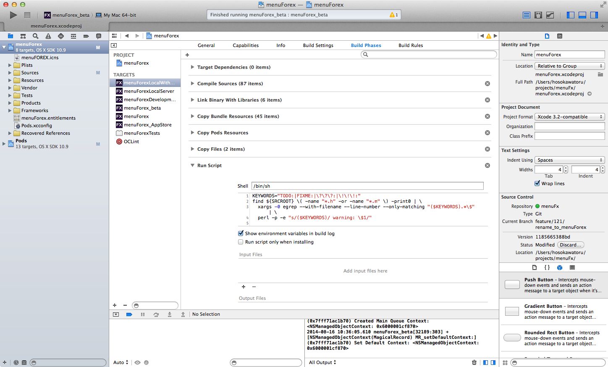
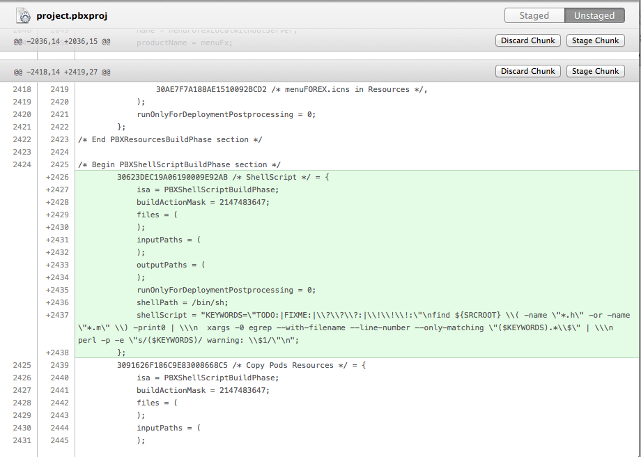
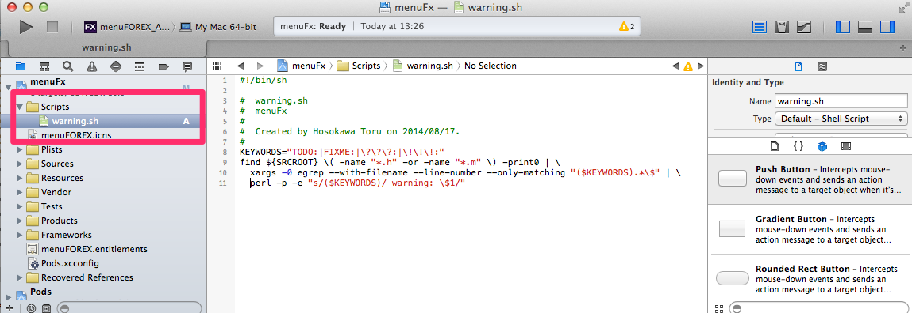
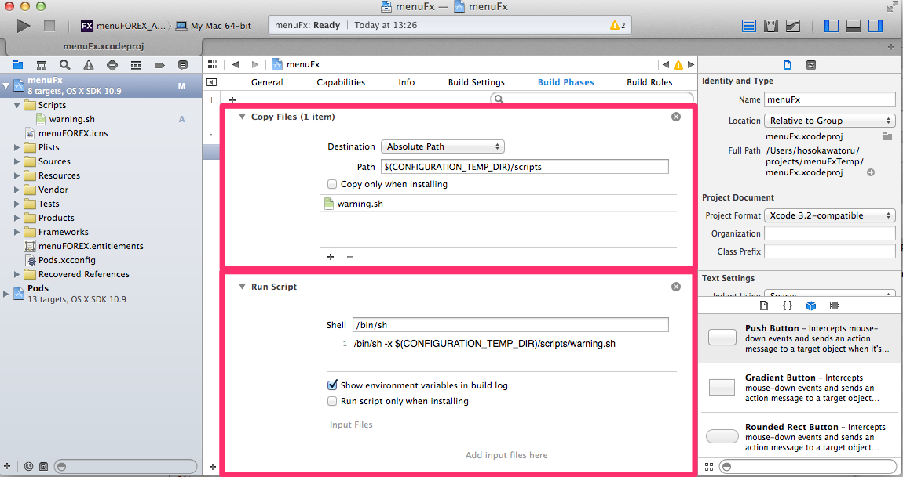
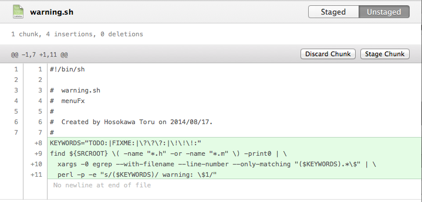

Run Script Tips
Toru Hosokawatwitter:@anton0825
facebook:toru.hosokawa1
github:hosokawa0825
blog:http://d.hatena.ne.jp/anton0825/
2014.8.20
Run Scriptをレビューしやすくする
Run Scriptの例
pbxprojファイルでは1行になっていてレビューしづらい
レビューしやすくするために、スクリプトをファイルにする
- 実行権限を追加 sudo chmod 774 *.sh
- スクリプトファイルをintermediatesフォルダの下にコピーする。 Run Scriptでスクリプトファイルを実行する。 
これでスクリプトのDiffが見やすい
TODOをビルド警告にする
Run Scriptで以下のスクリプトを実行するとTODO:という文字列をビルド警告にすることができる
KEYWORDS="TODO:"
find ${SRCROOT} \( -name "*.h" -or -name "*.m" \) -print0 | \
xargs -0 egrep --with-filename --line-number \
--only-matching "($KEYWORDS).*\$" | \
perl -p -e "s/($KEYWORDS)/ warning: \$1/"
archiveビルドした時にできる.xcarchive等のパスを簡単に知る方法
xcarchiveのパスは以下のように日時などで変化するのでJenkinsからビルドしたアプリをどこかにアップロードするといったことがやりづらいという問題がある。 /Users/username/Library/Developer/Xcode/Archives/2014-08-09/menuFX 2014-08-09 4.04.xcarchive
やり方
-
archiveビルドのpost-actionで以下の環境変数が使える。
ARCHIVE_PATH
ARCHIVE_PRODUCTS_PATH
ARCHIVE_DSYMS_PATH
-
archiveビルドのpost-actionで以下のスクリプトを実行し、環境変数を書き出す。
BUILD_DIR=$PROJECT_DIR/build
mkdir -p $BUILD_DIR
echo "ARCHIVE_PATH=\"$ARCHIVE_PATH\"" > $BUILD_DIR/archive_paths.sh
echo "ARCHIVE_PRODUCTS_PATH=\"$ARCHIVE_PRODUCTS_PATH\"" >> $BUILD_DIR/archive_paths.sh
echo "ARCHIVE_DSYMS_PATH=\"$ARCHIVE_DSYMS_PATH\"" >> $BUILD_DIR/archive_paths.sh
echo "INFOPLIST_PATH=\"$INFOPLIST_PATH\"" >> $BUILD_DIR/archive_paths.sh
-
ビルド後に実行するシェルスクリプトで以下を実行すると$ARCHIVE_PATHなどが使えるようになる。
source build/archive_paths.sh
Icon Versioning
アプリのアイコンに任意の文字列を重ねることができる。ビルド日時、コミットのハッシュ値、ブランチ名を表示するとよい。これで間違ったバージョンのアプリを使ってテストしてしまっていた・・・ということが防げる。
やり方
- ImageMagick installer for Mac OS XからimagemagickとGhostScriptをダウンロード・インストールする
- このプロジェクトのScripts/iconVersioning.shを自分のプロジェクトにコピーし、Run Scriptで実行する。
- iconVersioning.shの以下の部分を修正する
convert /tmp/temp.png /tmp/labels-base.png -geometry +0+$band_position -composite /tmp/labels.png -geometry +0+$text_position -geometry +${w}-${h} -composite "$target_path"
の「-geometry +${w}-${h}」を削除。 - シェルスクリプトから取得出来る文字列ならなんでもアイコンに表示出来るので、必要に応じてiconVersioning.shを修正する